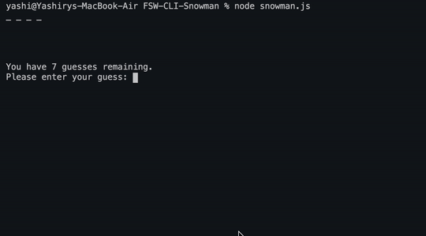

Fullstack Web Developer
Currently learning to code through Pursuit, an intensive 12 -month software engineering fellowship with a 9% acceptance rate. I look forward to transitioning into a more tech-centric role that merges my experience developing efficient and user-friendly process with my passion for coding.
In addition to my technical skills in Javascript, React and Redux, my unquenchable curiosity for life and people's experiences allow me to collaborate well with others and make me an asset to any team.
Beyond tech, I am an avid drawer, cine-phile, gamer and trivia enthusiast - look below for a fun random-fact. I am passionate about sharing ideas and stories through the utilization of gaming, illustrations and other media technologies, and using these forms to more accurately portray POC stories and unify people through shared experiences. I hope to eventually be able to apply my creative side to a future career in app and web development.
Text-Based Adventure Game
A text-based game using the command line. The player uses text input to control the game, and the game state is relayed to the player via text output. Repo Link
Snowman Game
A word guessing game that is represented by a row of dashes. If the player guesses a letter which exists in the word, the script writes it in all its correct positions. The player has 10 guesses to discover the word and the incorrect letter would decrement the guesses and display the used letters. Repo Link
-
HTML

-
CSS

-
Redux

-
React

-
Javascript

-
PostgreSQL

-
Express

-
Jira

-
Salesforce

If you want to learn more about me – you are more than welcome to contact me
I am available for freelance work and full-time employment.
Yashiry Azize
Contact me:
yashiryazize@pursuit.org